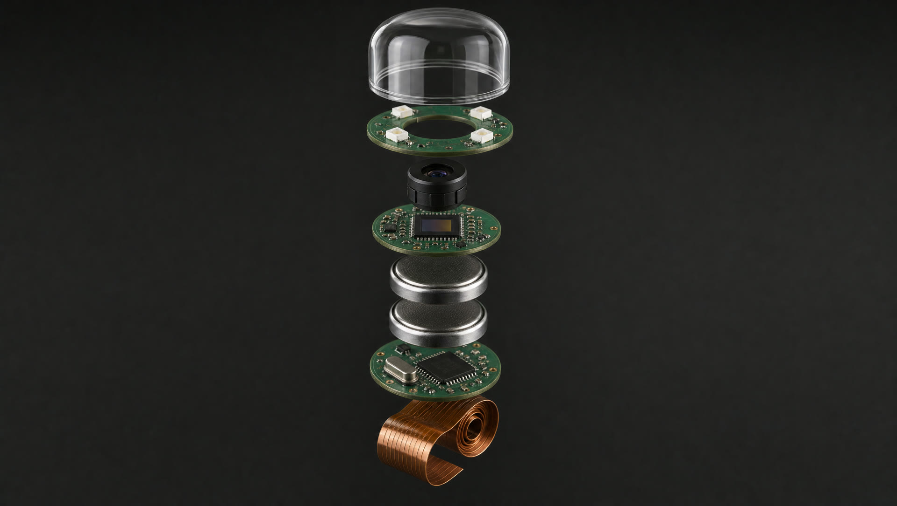
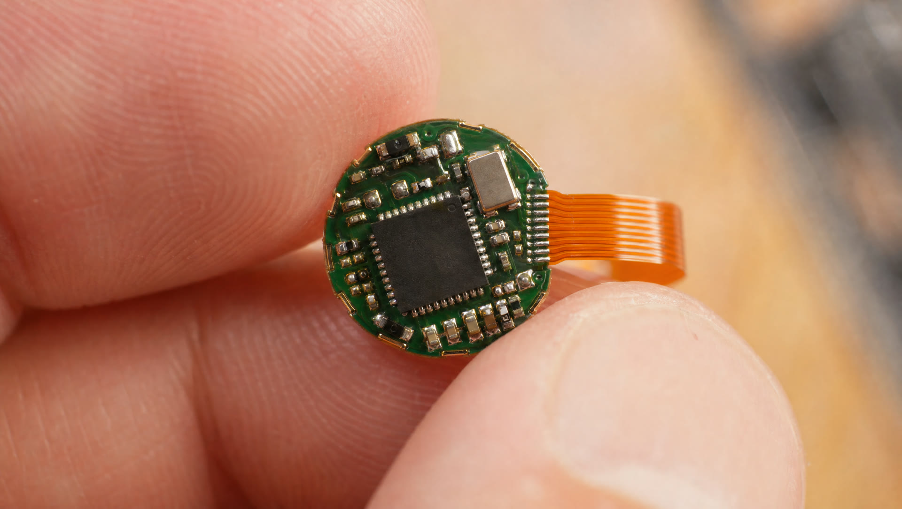
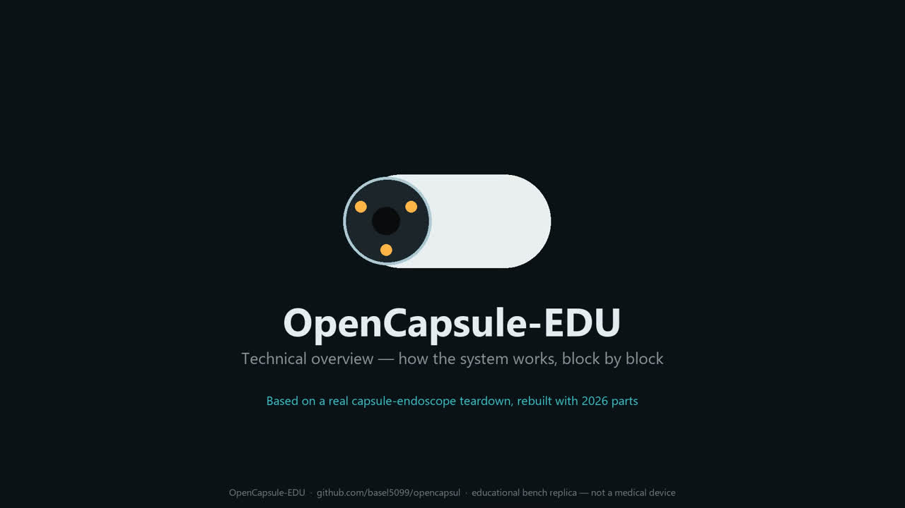

Engineered in the open · Made for everyone
A capsule endoscopy today costs a self-paying patient in Germany €1,100 or more — so almost nobody gets one. We are developing a complete screening service — capsule, logistics, and analysis by a German specialist physician plus AI — at a target price under €1,000, all-in.
In development — not yet a certified medical device
⚠ STATUS: IN DEVELOPMENT. OpenCapsul is not a certified medical device and no diagnostic service is offered yet. Nothing on this page is for sale, and nothing here is medical advice. Our published bench-top platform is for education and engineering only and must never be swallowed — see SAFETY_AND_LEGAL.md. The clinical device described below is a development goal, to be realized with established German manufacturers and CE-MDR approval (Zulassung).
§01 The screening gap
Colorectal cancer is one of the most preventable cancers — screening colonoscopy cuts mortality by around 70 %. But the exam is invasive, requires sedation and a day off work, and many people simply never go. The gentle alternative — a camera capsule you swallow — exists for over 20 years. At today's prices, it never became a screening tool.
Sources: Robert Koch-Institut · Deutsches Krebsforschungszentrum · Deutsches Ärzteblatt
§02 The landscape
Every commercial capsule system is a masterpiece of engineering — and every one is designed for hospital procurement, not for population-scale screening. A self-paying patient in Germany typically pays €1,100–1,500; the capsule alone is around €700.
| System | Company | What it does best | Positioning |
|---|---|---|---|
| PillCam SB3 | Medtronic (IE/US) | The market standard — 11 × 26 mm, 2 fps, huge clinical evidence base | Hospital / specialist procurement |
| EndoCapsule 10 | Olympus (JP) | Premium image quality | Hospital / specialist procurement |
| CapsoCam Plus | CapsoVision (US) | 360° panoramic view from 4 cameras, 15 h battery, no receiver belt | Hospital + reading service |
| MiroCam | IntroMedic (KR) | Body-communication transmission, up to 340° dual-camera view | Hospital / specialist procurement |
| OMOM HD | Jinshan (CN) | Two-way link, adaptive frame rate | Value segment, still clinic-bound |
| NaviCam + ProScan | AnX Robotica (US/CN) | First FDA-cleared AI reading tool — reads in minutes with 99.9 % reported sensitivity | Premium hospital systems |
| BioCam | BioCam (PL) | Capsule + AI telemedicine platform, home examination (in development) | Closest to our model — regulatory status not published |
| OpenCapsul | Germany (in development) | Open engineering, dual analysis (German Facharzt + AI), data in Germany | Target: complete service < €1,000 for everyone |
The gap nobody fills: affordability and access.
Better optics, more cameras, smarter AI — the industry competes on everything except price and direct access. Capsule endoscopy will only matter for early cancer detection when a large part of the population can actually afford it. That is the entire point of OpenCapsul.
§03 The planned service
One price, one complete journey — no hospital visit, no sedation, no day off work. This is the model we are building toward; it launches only after CE-MDR certification.
The patient orders through the platform. A guided preparation protocol (diet, bowel prep) arrives with the kit — the same preparation quality that clinics use.
At home, following the app's instructions. The capsule passes naturally through the GI tract while its camera records.
A small wearable receiver collects the photos and video during the passage. No belt of electrodes, no clinic chair.
The recording is uploaded to our cloud — hosted in Germany, GDPR-compliant, medical-grade data protection.
A German specialist physician (Facharzt with Approbation) reads the study — and an AI system analyzes it separately. Neither sees the other's result first.
The patient and their treating physician receive a structured report. Suspicious findings come with a clear recommendation — usually a targeted colonoscopy.
Every study is read by a Facharzt with German Approbation. Not a screenshot review — a full read by a physician who is legally and professionally accountable.
A separate AI analysis of every frame. AI in capsule endoscopy is proven territory — FDA-cleared readers already cut reading time from hours to minutes. Two independent reads catch more than one.
Hosting in German data centers under GDPR. Medical images never leave the jurisdiction — a hard requirement for us, not a feature.
§04 For physicians
The reading platform is a marketplace for specialist physicians: log in, review capsule studies pre-structured by the AI, issue your finding — planned honorarium around €120 per analysis. Flexible, remote, fully documented.
§05 Why believe us
Every competitor treats capsule technology as a black box. We did the opposite: we tore a commercial capsule down to the last component and published everything — the architecture, the power math, a working bench replica, and a video explaining it all. Transparency is our credential.



§06 The road to Zulassung
A medical device earns trust in stages. We publish ours — including what is not done yet.
Teardown, power budget, architecture docs, explainer video — published under open licenses on GitHub and YouTube.
The educational replica: camera → sub-GHz radio → receiver → viewer, with real power measurements. This is where our engineering claims are proven in public.
We are approaching established German medical-device manufacturers to fabricate the clinical capsule and receiver — and to walk the CE-MDR approval (Zulassung) path together. One or two partners, German quality, full traceability.
CE-MDR conformity, clinical evaluation, and the reading platform's medical-software certification. No shortcuts — this stage defines whether we deserve to exist.
Launch of the complete service: capsule, logistics, dual analysis, report. Affordable enough that early detection stops being a privilege.
§07 Get involved
You are a German medtech manufacturer, notified-body expert, or investor who believes screening should be affordable? We want to talk. hello@opencapsul.com
Fachärzte interested in remote reading on the future platform — or in shaping its clinical workflow. Register early interest.
The open bench platform is yours to build, break, and document. Issues and PRs welcome — within the safety rules.